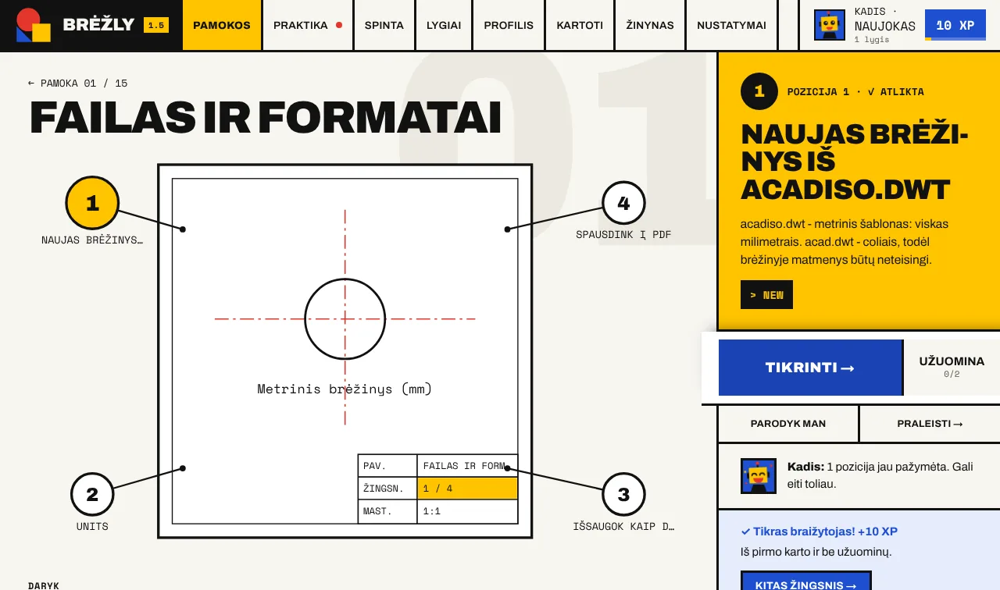
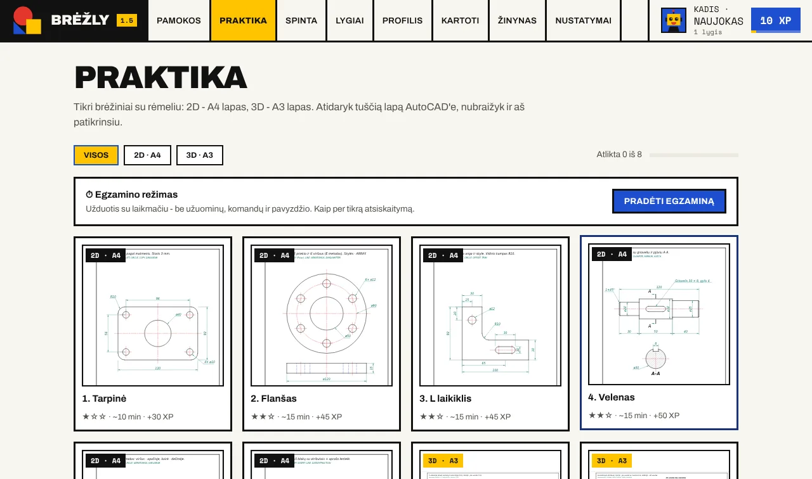
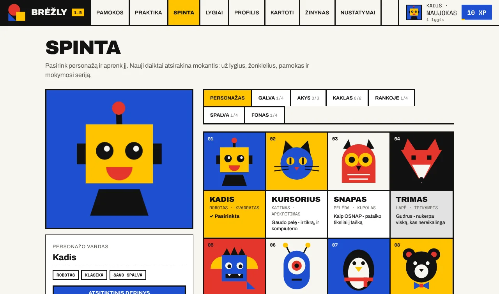

Braižai tu.
Brėžly tikrina.
Brėžly stovi šalia tavo AutoCAD ir mato tą patį brėžinį. Veda žingsnis po žingsnio, pats pastebi, kai padarei teisingai, ir paaiškina, kas ne taip.
Reikės Windows 10 ar 11 ir pilno AutoCAD. Testuojama versija {{VERSIJA}}, nemokamai.
Nubrėžk
apskritimą.
Ranka.
Brėžly patikrins jį kaip AutoCAD: suras centrą, spindulį ir pasakys, kiek tavo apskritimas tikslus. Taip pat jis tikrina ir tavo tikrus brėžinius.
Taip atrodo Brėžly
Tikros programos lango nuotraukos. AutoCAD atidarytas šalia, o Brėžly rodo, ką daryti, ir pats patikrina brėžinį.



Tapk
testuotoju
Išbandyk naujas Brėžly versijas anksčiau už kitus ir pasakyk, kas veikia, o kas ne. Tavo pastabos nulems, kas pateks į kitą versiją.
- Gauni laišką su testine Brėžly versija ir trumpu sąrašu, ką išbandyti.
- Išbandai pamokas savo AutoCAD'e – kada ir kiek nori.
- Parašai, kas veikia, o kas ne: atsakydamas į laišką arba šiame puslapyje.
- Naujos pamokos ir funkcijos – pirmiausia tau
- Tiesioginis ryšys su kūrėju
- Nemokamai, be įsipareigojimų
Išbandyk
pirmą pamoką
Programoje Brėžly pats pamato, kada žingsnis atliktas AutoCAD'e. Čia spausk mygtuką ir pajausi, kaip tai veikia.
Pasirink savo
braižytoją
Kiekvienas personažas – iš paprastų figūrų, o vardas – iš AutoCAD. Už pamokas gauni daiktų jų spintai.
{{PAMOKOS}} pamokų –
nuo failo iki 3D
Pamokų tvarka kaip inžinerinės grafikos kurse. Mokaisi braižydamas, ne skaitydamas.
{{UZDUOTYS}} brėžiniai,
kuriuos patikrina už tave
Gauni užduotį ir ruošinį. Nubraižai, įvedi TIKRINK – Brėžly pasako, ar skylės, spinduliai ir tūris sutampa.
Ne vaizdo įrašas.
Ne vadovėlis.
Savo tikrame AutoCAD, savo tempu. Tinka nemokama studento licencija.
Mato linijas, apskritimus, sluoksnius ir matmenis – ir pastebi, kai žingsnis atliktas.
Kodėl taip daroma, kur klaida ir ką taisyti. Už žingsnius – XP, lygiai ir ženkleliai.
Dažni klausimai
Ar reikia mokamos AutoCAD licencijos?
Ne. Brėžly veikia su pilnu AutoCAD, o studentai jį gali gauti nemokamai su Autodesk švietimo licencija.
Ar tinka AutoCAD LT?
Ne. Brėžly tikrina brėžinį per pilno AutoCAD sąsają, kurios LT versijoje nėra. Reikia pilnos AutoCAD versijos.
Ar veikia Mac'e ar telefone?
Programa skirta Windows 10 ir 11. Pamokas ir testus be AutoCAD gali peržiūrėti programėlėje – telefone ar naršyklėje.
Ką turės daryti testuotojas?
Gausi laišką su testine versija ir trumpu sąrašu, ką išbandyti. Pabandai pamokas savo AutoCAD'e, kada nori, ir parašai, kas veikia, o kas ne. Įsipareigojimų nėra – gali bet kada nustoti.
Ar saugu diegti?
Brėžly – atviro kodo: visą kodą gali peržiūrėti GitHub'e. Programa nerenka asmens duomenų – progresas laikomas tik tavo kompiuteryje. Plačiau – privatumo politikoje.
Kiek kainuoja?
Nieko. Brėžly nemokama, be reklamų ir paskyrų.
Kada bus galima atsisiųsti visiems?
Kai kartu su testuotojais ištaisysime klaidas. Užsiregistravę testuoti sužinosite pirmi.
Palik
atsiliepimą
Išbandei iššūkį ar pamoką? Pasakyk, kas patiko, o kas ne. Kiekvieną atsiliepimą skaito Brėžly kūrėjas ir pagal juos tobulina programą.
Brėžly {{VERSIJA}}
Windows'ui
Viena diegimo programa. Po įdiegimo Brėžly pats pasiūlys atnaujinti, kai išeis nauja versija.
Versija {{VERSIJA}} · visos versijos ir kiti failai
- Atsisiųsk ir paleisk Brezly_Setup.exe.
- Jei Windows parodys „Windows apsaugojo jūsų kompiuterį“ – spausk Daugiau informacijos → Vis tiek paleisti.
- Atsidaryk AutoCAD, paleisk Brėžly ir pradėk nuo 1 pamokos.